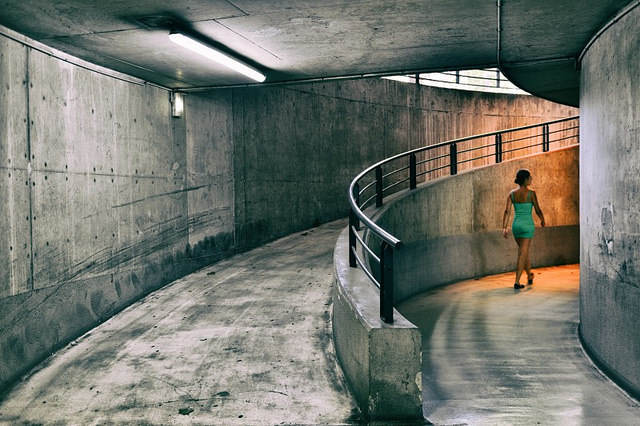

构图
构图伴随着艺术而来，它的历史也许还要长一些。当一个史前人把一张猛犸皮横挂于洞穴，嘴里咕哝着：“这样不是更好吗？”的时候，就有构图了。
我们的这位猛犸皮装饰者所提出的问题其实不是一个问题，而是一个观点。这便是构图的全部所在，即一个观点，一个景物怎样最好看的观点。
爱德华·韦斯顿的观点是：“构图就是最佳的观察方式。”无疑，韦斯顿知道，构图的方式就象各种各样的被摄物体一样多。象观察某一被摄体的摄影者一样多。最佳构图就是效果最佳的构图。
有许多书都试图使“最佳的观察方式”程式化，亦有许多摄影者死死地抱住那些程式不放。这些书列出一些比例法则，而那些摄影者则以为得到了福音，把想象中的坐标格子置于景物之上，竭力按照比例寻找主体该处的位置。这些书都论说如何寻找兴趣中心，而那些摄影者找到了兴趣中心，随后却再按照书本上的法则使兴趣中心偏离了真正的中心。
阅读有关书籍，下功夫研究构图，这当然是十分必要的，这样才能掌握如何调整平衡与不平衡，如何形成比例感，以及如何利用平衡和比例来改变特定构图的情调等等。但不应把法则看得至高无上，不能认为根据法则就可以处理好任何被摄体，用法则这把钥匙就能打开完美构图之门。
